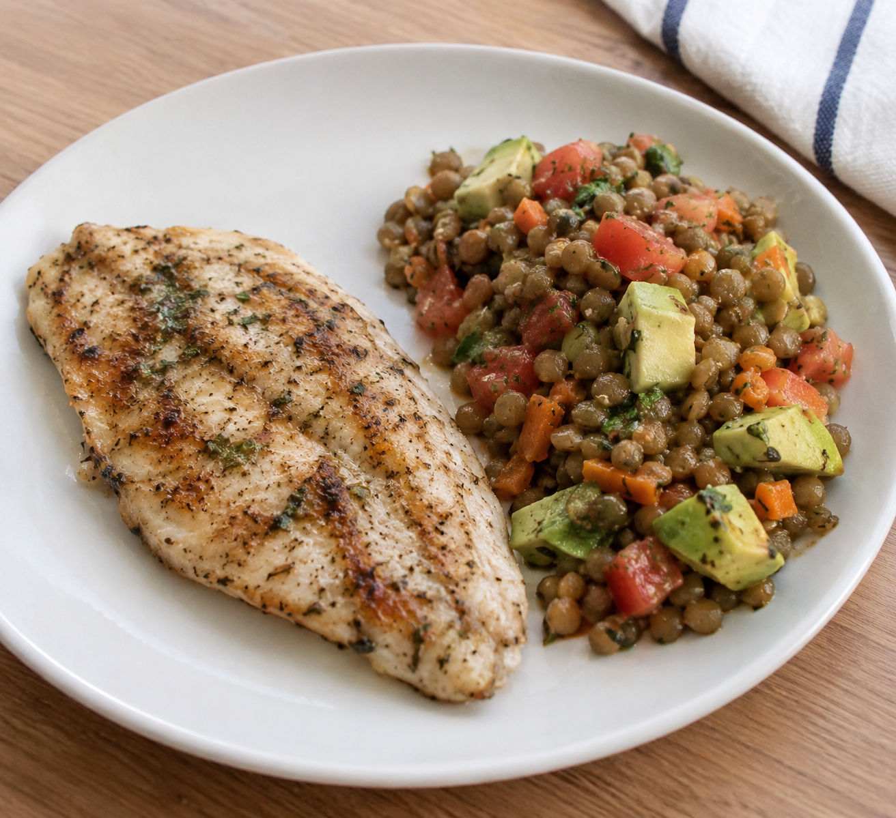
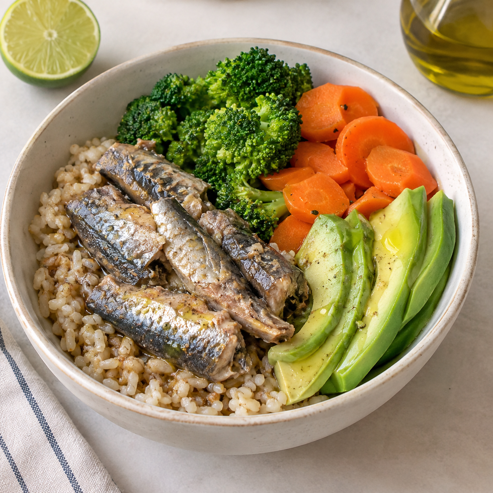
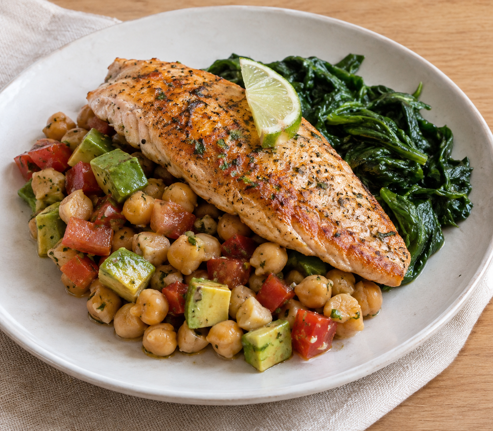
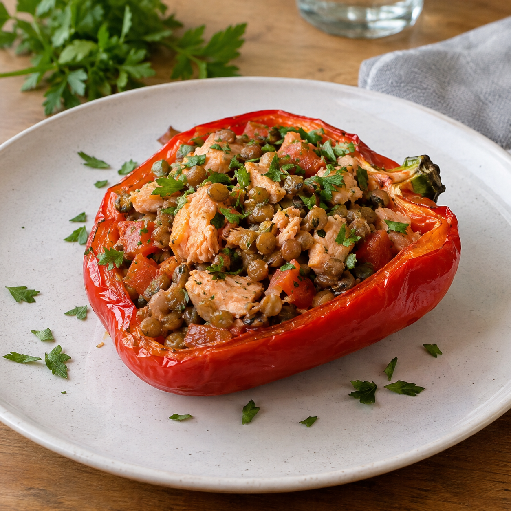
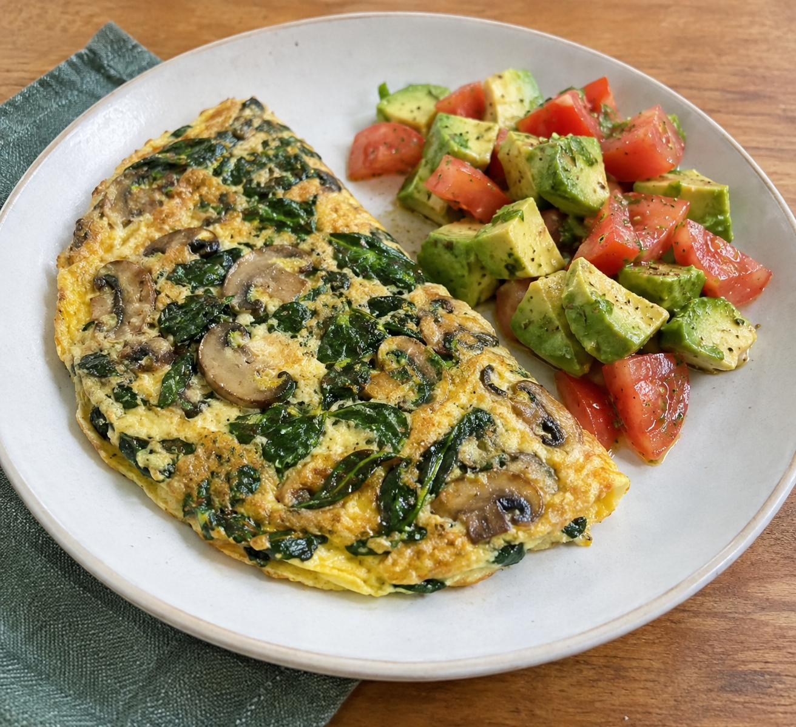
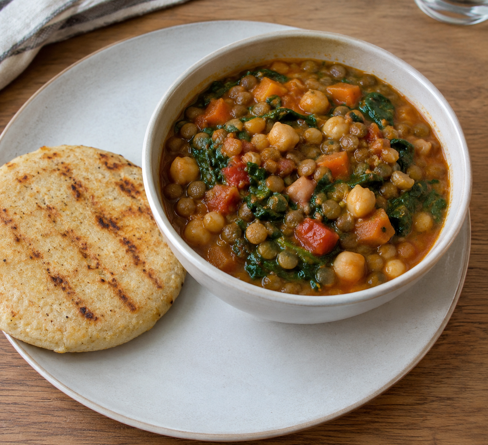

Desayunos
Arepa integral con huevo, aguacate y espinaca
Maíz integral, hoja verde, huevo y aguacate.
Salud visual y bienestar integral
⏱️ 15 min • 1 porción

⏱️ 25 min • 1 porción

⏱️ 10 min • 1 porción

⏱️ 5 min • 350 ml
Maíz integral, hoja verde, huevo y aguacate.

Fibra y grasas insaturadas en un bowl reconfortante.

Leguminosa, maíz, aguacate y vegetal fresco.

Preparación vegetalmente diversa y nutritiva.

Semillas y aguacate para una excelente nutrición matutina.
Omega-3 y legumbres protectoras de retina.

Betacarotenos y ácidos grasos esenciales.

Proteína magra y carbohidratos complejos.

Fresca, saciante y rica en antioxidantes.

Vitaminas A y C combinadas con pescado fresco.

Nutrición completa en un solo plato hondo.
Antioxidantes con textura cremosa y saludable.

Alto contenido de antocianinas para la salud ocular.

Dulce natural reconfortante sin azúcares añadidos.
Hidratación funcional repleta de vitamina C.

Vitamina A pura para la agudeza visual.

Protección celular avanzada frente al daño oxidativo.